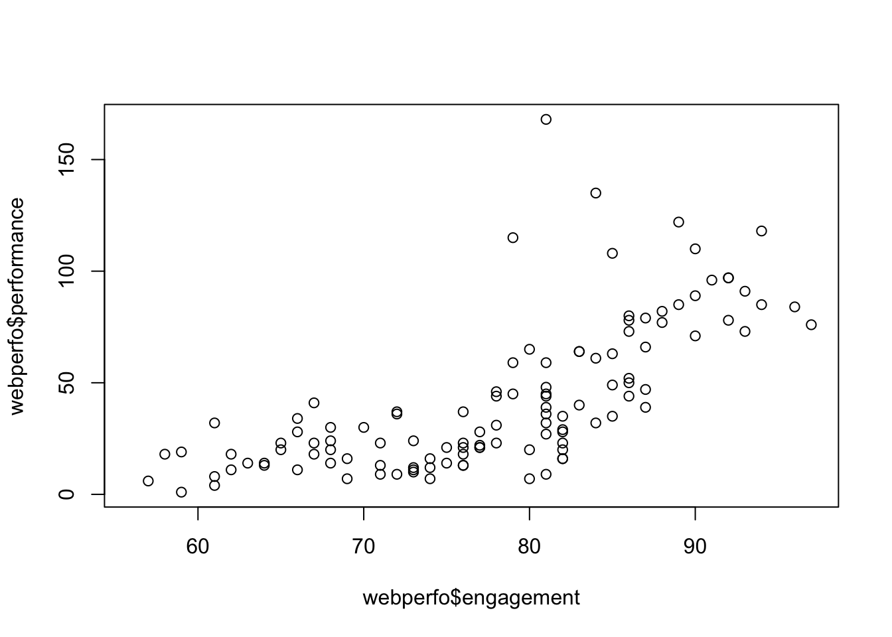
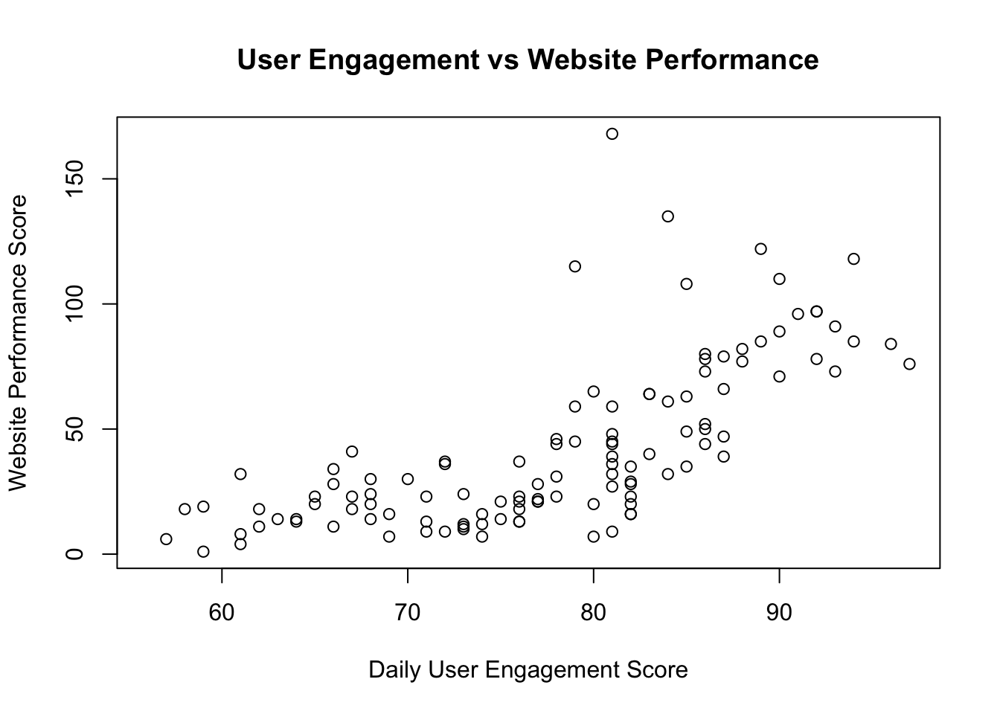
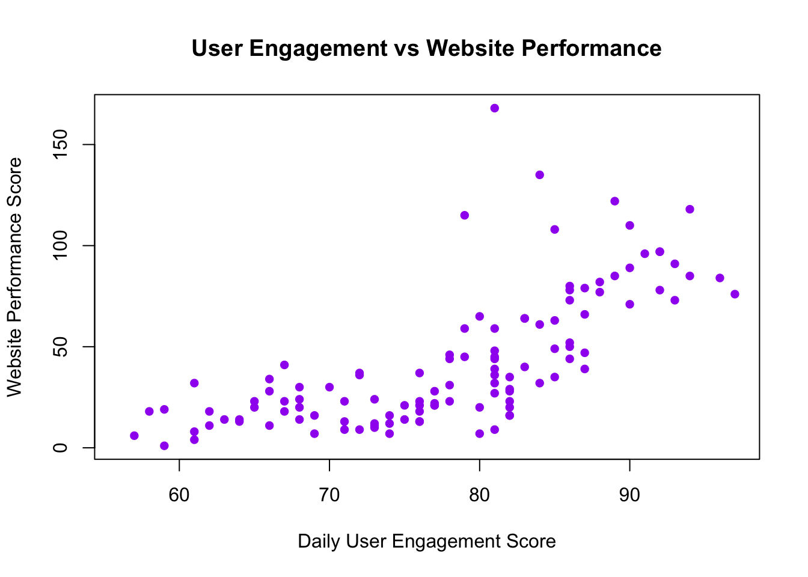
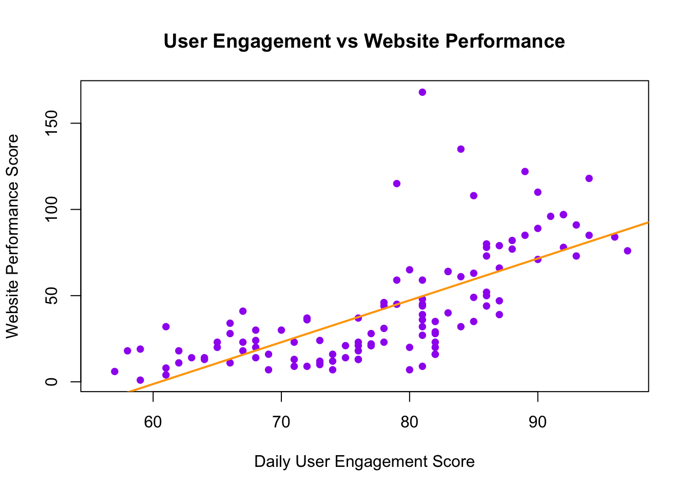

The Management 230 class with Johan Latulippe covers topics of website creation and making professional documents by using the program “R” and “RStudio”. So far we have gone over Quiz 1 and learned the basic skills of creating a document using “Rmarkdown”. We have written some code and used it to “knit” a professional document to use to analyse data, create charts, and nterpret statistics. These are all things we can use to analys data for a manager in our workplace.
First, create your dataset using this code:
max(# Create website performance dataset with business terminology
webperfo <- data.frame(
engagement = airquality$Temp,
performance = airquality$Ozone,
server_load = airquality$Wind
), na.rm = TRUE)## [1] 168There are 3 columns of data and the are named “engagement, performance, server_load” Why is it useful to see just the first few rows instead of printing all the data at once? You can see the pattern or if there are any mistakes easily.
head(webperfo)## engagement performance server_load
## 1 67 41 7.4
## 2 72 36 8.0
## 3 74 12 12.6
## 4 62 18 11.5
## 5 56 NA 14.3
## 6 66 28 14.9Performance What does the summary tell you about the range of your engagement scores (minimum to maximum)? Min = 56.00, Max = 97.00
summary(webperfo)## engagement performance server_load
## Min. :56.00 Min. : 1.00 Min. : 1.700
## 1st Qu.:72.00 1st Qu.: 18.00 1st Qu.: 7.400
## Median :79.00 Median : 31.50 Median : 9.700
## Mean :77.88 Mean : 42.13 Mean : 9.958
## 3rd Qu.:85.00 3rd Qu.: 63.25 3rd Qu.:11.500
## Max. :97.00 Max. :168.00 Max. :20.700
## NA's :37153 days of data could be useful information to a manager because it can let them know how reliable and representative the data is.
nrow(webperfo)## [1] 153The max is NA and the median engagement is 79.00
max(webperfo)## [1] NABecause if there are missing values we need to tell the computer to remove the missing values so it doesn’t reply with “NA”
max(webperfo$performance, na.rm = TRUE)## [1] 168Yes, they both affect each other and as performance goes up, so does engagement What makes this plot difficult to understand for a business presentation? There are not many numbers of the axis and not very clear titles. We do not know what this plot is representing
plot(webperfo$engagement, webperfo$performance)
Multiple people can look at the data with less context and have it make sense. Also keeps things organized knowing which plots refer to what.
plot(x = webperfo$engagement, y = webperfo$performance,
main = "User Engagement vs Website Performance",
xlab = "Daily User Engagement Score",
ylab = "Website Performance Score",)
Both performance and engagement trend upwards and their relationship with each other becomes less constant as they increase in value.
plot(x = webperfo$engagement, y = webperfo$performance,
main = "User Engagement vs Website Performance",
xlab = "Daily User Engagement Score",
ylab = "Website Performance Score",
pch = 16,
col = "purple")
The red trend line is showing an upward trend in the scatter chart following the upward trend of the data.
plot(x = webperfo$engagement, y = webperfo$performance,
main = "User Engagement vs Website Performance",
xlab = "Daily User Engagement Score",
ylab = "Website Performance Score",
pch = 16,
col = "purple")
abline(lm(performance ~ engagement, data = webperfo),
col = "orange", lwd = 2)
This is a moderate relationship. “0.69” correlation
cor(webperfo$engagement, webperfo$performance, use = "complete.obs")## [1] 0.6983603When engagement is high, website performance improves, which is shown by the positive correlation of 0.69. This means that using better content to encourage user-engagement,improves overall performance. An e-business manager should prioritize strategies that drive engagement beacuse it would improve the website performance as well.